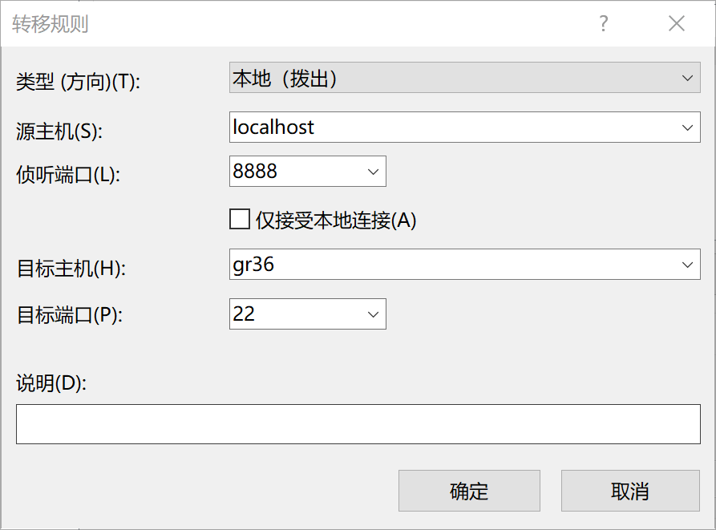

参考了这篇文章。
系里的服务器是HPC集群，平时用服务器都是在本地测试好后用git把代码同步上去，在上面提交大运算量的任务跑，跑完再把结果文件下载回本地处理。但随着数据量变大，这样做的时空成本都逐渐让人难以承受，因此存在在服务器上就地处理数据的需求。能通过ssh直接连接到的是服务器的登录节点，但较大计算量的任务不宜在登录节点上跑，因此需要转发ssh流量到计算节点上。
我这里使用XShell作为ssh终端。首先登录到登录节点上，提交一个交互式任务
1 | qsub -I -q debug |
（-q debug表示提交到debug队列）这条命令会打开计算节点的终端，此时可以发现终端已经显示出了计算节点的名字：
1 | [xxx@gr36 ~]$ |
这里就是连接上了gr36节点。或者也可以查看$HOSTNAME环境变量得到节点名。
连接到计算节点后，保持当前窗口不要关闭，再创建一个新的XShell会话，在连接-SSH-隧道按如下方式新建一条转发规则

目标主机是计算节点的主机名的22号端口（因为VSCode Remote使用ssh连接），源主机是localhost，端口号可以任意设，这里设成8888号。创建好后连接到登录节点即可。此时访问本机的8888号端口的ssh流量就被转发到计算节点上。再在本机的~/.ssh/config文件中添加如下的项（和连接登录节点的身份认证部分一致，只是主机和端口设成上面在本机监听的端口），VSCode Remote就可以直接在计算节点上运行了。
1 | Host HPCNode |
需要注意的是断开后再次提交交互式任务可能会分配到不同的计算节点，不同节点的ssh指纹不同，因此会导致连接失败。解决方法就是每次重新连接前到~/.ssh/known_hosts文件中删除localhost:8888的那一项即可。